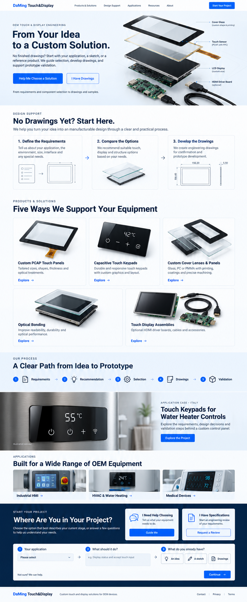

Define the Requirements
Tell us about your equipment, users, installation space and operating environment. “Not sure” is a useful starting point.
APPLICATION → DESIGN BRIEF
OEM TOUCH & DISPLAY ENGINEERING
No finished drawings? Start with your application, a sketch or a reference product. We help define the requirements, compare touch and display options, develop drawings and support prototype validation.
From requirements and component selection to drawings and samples.

DESIGN SUPPORT
Bring the idea. We help clarify the decisions
that turn it into a workable design.
Tell us about your equipment, users, installation space and operating environment. “Not sure” is a useful starting point.
Review suitable touch, cover material, display and connection options. Understand the trade-offs before you choose.
Confirm the agreed layout, dimensions and interfaces through drawing reviews before prototype development.
PRODUCTS & SOLUTIONS
Individual components or a coordinated assembly. Start with what your equipment needs.

Touch panels tailored to your equipment’s appearance, mechanics, interfaces and operating requirements.
Explore PCAP touch panel →
Custom button functions, graphics and panel layouts for equipment controls.
Explore Touch keypad →Glass, PC or PMMA panels with project-specific shapes, windows, printing and surface options.
Explore Cover panel →Bonding evaluated for your cover, touch and display combination and validation needs.
Explore Optical bonding →
Integrated touch displays with optional HDMI driver boards, cables and accessories.
Explore Touch display assembly →OUR PROCESS
Drawing scope, development costs and schedules are agreed for each project.
ILLUSTRATIVE WATER-HEATER DESIGN EXAMPLE
Discover the design questions behind a custom appliance panel: button layout, cover construction, control connections and sample validation.
Project visuals and technical results are pending confirmation. This preview shows the intended case-study structure.
APPLICATIONS
ENGINEERING & QUALITY
DaMing Touch&Display supports OEM teams from touch and cover selection through display integration. We clarify the scope, review drawings and agree on sample checks with your team.
FROM COMPONENTS TO MANUFACTURING
Explore component details, production settings and sample handling.

Manufacturing views bring the integration discussion into context.
See equipment and operator interaction. Process scope is reviewed for each configuration.
ENGINEERING RESOURCES
Yes. Describe your application, intended functions and approximate space. A sketch or reference product can help, but finished drawings are not required to start. We first clarify the requirements, then agree on the design work and drawings needed.
Begin with how users operate the equipment. Fixed functions can be discussed as touch keys; on-screen interaction may call for a PCAP panel; display integration adds screen and connection requirements. We compare the options against your project.
Compare the complete construction: material grade, thickness, coatings, printing and mounting. Glass, PC and PMMA offer different trade-offs in weight, impact behavior, surface durability and appearance. Share the cleaning agents and exposure conditions so compatibility can be reviewed.
We review the LCD model or required display specification, host connection, power and installation constraints. The driver board, firmware, connectors and cables must be matched to the agreed configuration.
Share the glove material and thickness, moisture conditions and expected behavior. We review the sensor, cover and controller together, then agree on sample checks. Touch response with water and protection against water ingress are separate requirements; neither is a blanket guarantee.
Full glove & wet-touch FAQ →START YOUR PROJECT
Choose your starting point. We’ll help define what comes next.
Review your project brief before sending. Submitting opens FormSubmit for delivery to sgk@touch-displays.com; security verification or first-time recipient activation may be required.